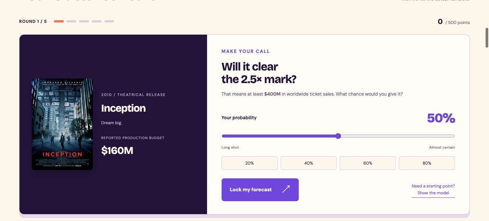

Make one forecast.
Give a film a chance of reaching a box-office mark. Compare your call with its historical outcome, then open the model’s reasoning and reliability check.
Take the studio chair →KARAN VERMA · USC COMM 502 · WORKING PROTOTYPE
How well can we judge film performance—and what changes when we inspect the evidence? Hollywood Luck Lab turns that question into a forecast game, career explorer, and an explanation of what the model can and cannot tell us.

A QUICK WAY IN
The product is designed to reward curiosity before asking someone to read a statistical report. Each interaction gives the next number a reason to matter.
Give a film a chance of reaching a box-office mark. Compare your call with its historical outcome, then open the model’s reasoning and reliability check.
Take the studio chair →Explore a familiar actor or director. Switch between reported gross and gross relative to budget. Shuffle five real credits to see how selective evidence changes the story.
Explore a career →Follow an executive story year by year. Separate the appointment, the development pipeline, and the eventual release before handing out credit.
Open a case file →THE ENGINEERING BEHIND THE EXPERIENCE
I shaped the project’s questions and use cases, connected them to my communication coursework, and iterated the experience through design and functionality reviews.
I developed the prototype with AI assistance for research, implementation, debugging, and test development. The source, data provenance, and validation methods are available for inspection. This is a learning project in active development.
Test the model on a genuinely new film sample, improve probability calibration, and run a user study to learn whether the explanation design improves understanding.
EVIDENCE BEFORE A BIG CLAIM
The forecasting evaluation covers 2009–2013. The broader career catalog is a selected historical snapshot with dated and missing records. Ratings, popularity, and future career outcomes are excluded from prediction inputs; this remains a retrospective exercise, not a current release forecast.